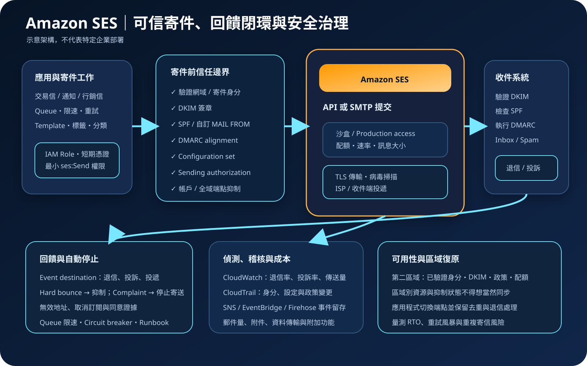

Amazon SES：可信寄件、送達治理與濫用防護
Amazon Simple Email Service（Amazon SES）是可透過 API 或 SMTP 提交郵件的受管服務，適合交易通知、系統郵件與經同意的批次寄送。AWS 管理寄信服務基礎設施，但不會代替寄件身分治理、名單品質、內容合規、退信與投訴處理、取消訂閱、速率控制或跨區復原。
作者：Dr. William｜查閱與發布：2026-10-05
服務定位
Amazon SES 提供高擴展性的寄信與收信能力；本文聚焦寄信。應用程式可使用 AWS SDK 呼叫 SES API，或以 SMTP 相容介面提交郵件。正式使用前須建立並驗證寄件網域或電子郵件身分、設定 DKIM，並依需求配置自訂 MAIL FROM、SPF、DMARC、Configuration set、事件目的地、抑制清單及寄送授權。
SES 不是完整客戶關係管理、行銷自動化或同意管理平台，也不保證郵件必然進入收件匣。寄件信譽、內容品質、收件者互動、網域驗證、退信率、投訴率、ISP 政策與名單來源都會影響送達。若只需要應用事件通知，也應比較 Amazon SNS、EventBridge 或其他不依賴電子郵件的通道。
核心概念與服務邊界
寄件身分與驗證
- Verified identity：可驗證整個網域或個別地址。驗證網域後，通常可由該網域的地址寄送，但仍須管理授權與防冒用。
- DKIM：SES 可代表已驗證身分對郵件進行 DKIM 簽章；收件端以 DNS 公鑰驗證訊息完整性與寄件網域。
- SPF 與 MAIL FROM：SPF 驗證 envelope sender 使用的 MAIL FROM 網域是否允許該寄件來源；自訂 MAIL FROM 有助於對齊品牌與 DMARC。
- DMARC：以 SPF 或 DKIM alignment 判斷顯示寄件網域是否通過驗證，並透過 DNS 政策與報表逐步提高防冒用能力。
- Sending authorization：身分擁有者可用政策授權另一個 AWS 主體代寄；必須限制來源、寄件地址與必要動作。
寄送狀態與治理
- Sandbox：新帳戶在各區域通常先受沙盒限制，只能寄給已驗證收件者或模擬器，且配額較低；Production access 需依區域申請。
- Sending quota：包含 24 小時可寄數量與每秒傳送速率，皆以收件者數量計算；實際限制可能依區域與帳戶調整。
- Configuration set：將事件、IP pool、追蹤、聲譽與其他寄件設定套用到特定郵件類型，便於分流治理。
- Event publishing：投遞、退信、投訴、拒絕、延遲、開啟、點擊等事件可送往支援的事件目的地，以建立自動化處理。
- Suppression：帳戶層或適用的全域端點抑制清單可避免重複寄送至已知退信或投訴地址；應另外維護業務取消訂閱與同意狀態。
- Global endpoint：可將支援的兩個區域組成多區域寄件端點，應用透過 Endpoint ID 提交；兩區域仍須對齊寄件身分、Configuration set、配額及相依設定。
適合與不適合的使用情境
適合
- 網站或應用程式需要寄送註冊確認、密碼重設、付款收據、訂單狀態、警示及其他交易型郵件。
- 企業有合法、可證明同意來源的會員名單，需要大量寄件、事件回饋、分流與自動停止機制。
- 工作負載需要透過 SDK、API 或 SMTP 整合，並以 IAM、Configuration set、CloudWatch 及 CloudTrail 納入雲端治理。
- 團隊能持續管理 DNS、DKIM、SPF、DMARC、退信、投訴、取消訂閱、配額、內容品質與寄件信譽。
不適合或不能單獨完成
- 缺乏可證明同意的收件名單、購買名單或計畫寄送未經請求內容；技術上可送不代表符合政策與法規。
- 需要完整顧客旅程、分眾、A/B 測試、偏好中心與多通路行銷，但沒有額外應用或平台支援。
- 把電子郵件當成唯一緊急告警通道；收件端延遲、垃圾郵件判定或信箱故障都可能使通知失效。
- 要求絕對一次寄送或保證進入收件匣。重試、逾時與不確定結果可能造成重複提交，收件端也有獨立政策。
- 未建立退信、投訴、取消訂閱與濫用事件的自動處理，卻計畫直接提高寄件量。
示意故事案例：電商交易信與會員通知分流
以下為示意案例，不代表特定企業或正式部署。 一家電商同時寄送付款收據、物流通知與會員活動信。團隊將交易信與行銷信分成不同寄件子網域、Configuration set、事件管線與速率佇列。應用程式在私有 subnet 執行，使用工作負載 IAM role 與短期憑證呼叫區域 SES API；不在程式碼、映像或設定檔保存長期密鑰。寄件網域完成 DKIM，MAIL FROM 設定 SPF，DMARC 先以監控政策收集報表，再依驗證結果逐步提高處置強度。
訂單事件先進入 queue，由寄件 worker 依 SES 配額進行 token-bucket 限速並附帶穩定訊息 ID。Configuration set 將投遞、退信、投訴、延遲與開啟事件送入事件處理流程。Hard bounce 與 complaint 立即停止後續寄送；會員取消訂閱同步回偏好中心。CloudWatch 監控寄送量、退信率、投訴率與事件管線失敗，CloudTrail 保存身分、政策及 Configuration set 變更。第二區域預先建立獨立的寄件身分、DKIM DNS 記錄、授權、配額、抑制同步與事件管線，演練切換時同時驗證去重，避免同一封交易信重複送出。

建置與運作流程
- 分類郵件：分開交易信、營運通知、行銷信與安全告警，記錄擁有者、資料分類、合法基礎、保留期限、RTO 與最高寄送量。
- 選擇區域與端點：確認 SES 功能、收發能力、配額、資料路徑、延遲與法規要求；若採 Global endpoint，須確認支援的區域配對、Endpoint ID 與兩區域資源一致性。
- 建立寄件身分：優先驗證專用網域或子網域，設定 DKIM；依治理需求配置自訂 MAIL FROM、SPF 與 DMARC。
- 保護 DNS：限制 DNS 變更權限，對 DKIM、SPF、DMARC 與 MAIL FROM 記錄實施變更審核、監控及復原程序。
- 申請 Production access：說明寄件類型、名單來源、退信投訴與取消訂閱流程；依各區域實際核准配額設計容量。
- 選擇提交方式：新應用優先使用 AWS SDK 與 API；既有系統若使用 SMTP，將 SMTP 機密存入 Secrets Manager 並限制網路與輪替。
- 實施最小權限：工作負載使用 IAM role 與短期憑證，只允許必要的寄送動作、寄件身分、來源條件與標籤；人員使用聯合登入與 MFA。
- 建立 Configuration set：依郵件類型分流事件、追蹤、IP、聲譽及其他設定，避免所有流量共用不可區分的政策。
- 建立事件閉環：把退信、投訴、延遲、拒絕與投遞事件送至受監控目的地，實作抑制、取消訂閱、告警與人工調查。
- 控制速率與重試：依配額限速，對 throttling 或暫時失敗使用有上限的指數退避與 jitter；對不確定結果使用穩定 ID 及去重紀錄。
- 保護內容與機密：敏感資料最小化，不把密碼、驗證碼以外的機密、內部網路資訊或不必要個資放入郵件與標頭；範本參數須做輸入驗證與輸出編碼。
- 監控聲譽：追蹤退信率、投訴率、傳送量、延遲、事件遺失、取消訂閱及網域驗證狀態；超過內部門檻時自動降速或停止。
- 演練復原：測試 SES 節流、DNS 錯誤、DKIM 失效、事件目的地故障、濫用金鑰、區域切換、重複寄送與抑制清單不一致。
成本、可用性與維運考量
SES 提供依用量計費的寄送、收信、資料量與附加功能項目；2026 年 7 月另推出 Essentials、Pro 與 Enterprise 分級方案，依寄件量與所需的送達、專用 IP、多區域韌性等能力選擇。其他成本可能包含附件、Global endpoint、專用 IP、Virtual Deliverability Manager、Mail Manager、事件目的地、SNS、Firehose、CloudWatch Logs、KMS、Secrets Manager、NAT 或 PrivateLink。免費額度、方案供應區域與單價會變動，估算時須以查閱當日的官方價格頁、實際區域、月寄件量與附件大小重新計算。
降低單封郵件成本不能犧牲名單品質。重複寄送、無效地址、過大附件、過量事件、長期保存開啟點擊資料與未分流的專用 IP 都可能放大成本或傷害信譽。大量附件通常可改為經授權且具有效期的下載連結，同時評估資料外洩、連結轉寄與存取稽核。
SES 的多數資源具有區域邊界，寄件身分、沙盒狀態、配額、Configuration set、事件目的地、SMTP 機密與帳戶層抑制清單不能假設自動一致。Global endpoint 可將支援的兩個區域納入多區域寄件，但仍須讓兩區域具備等效身分、Configuration set 與完整尖峰配額；事件目的地、MAIL FROM、政策、通知或其他相依設定可能需要手動補齊。若不採 Global endpoint，應用須自行切換區域端點。兩種方式都要處理佇列積壓、事件連續性、重試風暴與重複寄信。
Amazon SES 特有資安風險與控制
- 網域驗證後寄件範圍過寬：驗證網域不應讓所有工作負載任意使用任一寄件地址；以 IAM 條件、寄件授權政策、環境與子網域分隔限制寄件身分。
- DKIM 私鑰或 DNS 控制遭濫用：限制 DNS 與 SES 身分管理權限，監控 DKIM 狀態及記錄變更；異常時停用相關身分並輪替 DKIM。
- SPF、DKIM 與 DMARC 未對齊：分階段導入 DMARC，先收集報表確認所有合法寄件來源，再提高 policy，避免未盤點系統被誤擋。
- 長期 SMTP 機密外洩：新系統優先採 IAM role 與 API；必須使用 SMTP 時，機密存於 Secrets Manager、定期輪替、限制網路與使用範圍，日誌不得記錄。
- 寄件權限過大：限制 ses:SendEmail、ses:SendRawEmail、身分 ARN、From 地址與允許條件；分開管理身分、政策、事件設定與寄送權限。
- 寄件濫用或帳戶接管：使用人員 MFA、工作負載短期憑證、異常量告警、預算告警、速率上限與 circuit breaker；發現未授權寄件時立即停用來源並調查 CloudTrail。
- 公開網路路徑不受控：依架構評估 SES VPC endpoint 與 egress 控制；端點 policy、security group、DNS 與 IAM 必須共同限制，不能只建立 endpoint 就視為私有安全。
- 郵件標頭注入：From、To、Subject、Reply-To 與自訂標頭只接受允許格式，移除換行控制字元，避免攻擊者插入額外收件者或標頭。
- HTML 範本注入與惡意連結：對動態內容輸入驗證及輸出編碼，不讓收件者資料直接形成 HTML、URL 或追蹤參數；敏感操作仍須回到受驗證網站完成。
- 個資與機密外洩：郵件內容、標題、地址、事件與標籤都可能進入第三方信箱或日誌；只寄必要資料，敏感附件採加密與受控下載。
- 未處理退信與投訴：Hard bounce、complaint 與取消訂閱必須快速抑制；事件管線故障時應降速或停止，而不是盲目繼續寄送。
- 追蹤資料治理不足：開啟與點擊追蹤可能涉及隱私與法規；只在具備適當告知、同意、保留與存取控制時啟用。
- 配置集未套用：應用若漏傳 Configuration set，可能失去事件與聲譽治理；在程式測試、部署政策與監控中驗證每類郵件確實套用。
- CloudTrail 認知錯誤：CloudTrail 可記錄 SES API 活動，但不等於完整郵件內容或收件端行為稽核；寄件事件、應用紀錄與業務同意證據須另外保存。
- 重試造成郵件轟炸：設定有上限重試、全域去重鍵、單一收件者速率限制與人工停止開關，避免逾時或區域切換造成重複寄送。
- Global endpoint 設定漂移：定期比對兩區域寄件身分、Configuration set、配額、事件目的地、政策與 MAIL FROM；切換前確認健康區域可承受完整流量。
共同責任邊界
AWS 負責 SES 受管服務及底層雲端基礎設施安全、服務端可用性與支援範圍內的維護。客戶仍負責寄件內容、收件名單及合法基礎、DNS、寄件身分、IAM、SMTP 機密、DKIM／SPF／DMARC、Configuration set、退信投訴、抑制、取消訂閱、監控、成本與跨區復原。
客戶須落實 IAM 最小權限、人員 MFA 與工作負載短期憑證、網路隔離與 egress 控制、避免不必要公開管理介面、KMS 加密、Secrets Manager／Parameter Store、CloudTrail／CloudWatch、事件留存、資料備份及跨區復原。AWS 不會替客戶判斷名單是否取得同意、郵件是否含過量個資、某網域是否被冒用、退信投訴是否已停止、DMARC 是否涵蓋所有合法來源，或第二區域能否在 RTO 內安全接手。
上線前可執行檢查清單
- □ 已分開交易信、通知與行銷信，記錄擁有者、資料分類、合法基礎、保留期限、RTO 及最大寄送量。
- □ 已驗證專用網域或子網域，DKIM 正常，SPF、MAIL FROM 與 DMARC alignment 已在實際收件端測試。
- □ DNS 變更使用最小權限、MFA、審核與監控；DKIM、SPF、DMARC 記錄有復原程序。
- □ 各使用區域均確認沙盒或 Production access 狀態、每日配額、每秒速率及提高配額流程。
- □ 工作負載使用 IAM role 與短期憑證；寄送、身分管理、政策及事件設定權限已分離。
- □ 若使用 SMTP，機密僅存 Secrets Manager，已輪替並限制網路來源；程式碼、映像、日誌、URL、標籤均無敏感值。
- □ 寄件身分、From 地址、來源條件與 sending authorization 已限制，拒絕路徑已有測試。
- □ 已依郵件類型套用 Configuration set，並確認所有寄件路徑都會產生事件。
- □ 退信、投訴、延遲、拒絕及取消訂閱會自動抑制或停止，不依賴人工每日查看。
- □ 已建立收件者層與全域限速、bounded retry、backoff、jitter、去重鍵及 circuit breaker。
- □ 郵件標頭防注入，HTML 與 URL 參數完成輸入驗證、輸出編碼與安全連結設計。
- □ 敏感內容最小化；附件、下載連結、追蹤資料、事件日誌與保存期限符合資料治理要求。
- □ 已設定寄送量、退信率、投訴率、延遲、事件管線失敗、DKIM 狀態、異常成本與未授權 API 告警。
- □ CloudTrail 已建立持續 trail；CloudWatch 與事件目的地具備保留、加密、存取控制與失敗告警。
- □ 第二區域的身分、DKIM、IAM、Configuration set、事件目的地、配額、抑制同步及監控已建立。
- □ 若使用 Global endpoint，兩區域等效設定、Endpoint ID、完整流量配額、事件連續性及設定差異檢查均已驗證。
- □ 已演練 SMTP 機密外洩、權限濫用、DNS 錯誤、SES 節流、事件中斷、區域切換與重複寄信。
AWS 官方一手來源
- What is Amazon SES?（查閱：2026-10-05）
- Email-sending process for Amazon SES（查閱：2026-10-05）
- Creating and verifying identities in Amazon SES（查閱：2026-10-05）
- Authenticating email with DKIM in Amazon SES（查閱：2026-10-05）
- Authenticating email with SPF in Amazon SES（查閱：2026-10-05）
- Complying with DMARC authentication protocol in Amazon SES（查閱：2026-10-05）
- Moving out of the Amazon SES sandbox（查閱：2026-10-05）
- Managing Amazon SES sending limits（查閱：2026-10-05）
- Using sending authorization with Amazon SES（查閱：2026-10-05）
- Monitoring email sending using Amazon SES event publishing（查閱：2026-10-05）
- Using the Amazon SES account-level suppression list（查閱：2026-10-05）
- Setting up VPC endpoints with Amazon SES（查閱：2026-10-05）
- Controlling access to Amazon SES（查閱：2026-10-05）
- Security best practices for Amazon SES（查閱：2026-10-05）
- Logging Amazon SES API calls with AWS CloudTrail（查閱：2026-10-05）
- Monitoring your Amazon SES sending activity（查閱：2026-10-05）
- Regions and Amazon SES（查閱：2026-10-05）
- Using Global endpoints in Amazon SES（查閱：2026-10-05）
- Amazon SES pricing（查閱：2026-10-05）
- Amazon SES introduces pricing plans（查閱：2026-10-05）
- AWS Well-Architected Security Pillar｜Shared responsibility（查閱：2026-10-05）
內容說明
本文依查閱日可用的 AWS 官方文件整理，作為基礎學習與架構討論材料；實際部署仍須依最新區域支援、沙盒狀態、配額、寄件政策、DNS、驗證方法、事件目的地、價格、資料分類、隱私與通訊法規及復原演練結果調整。